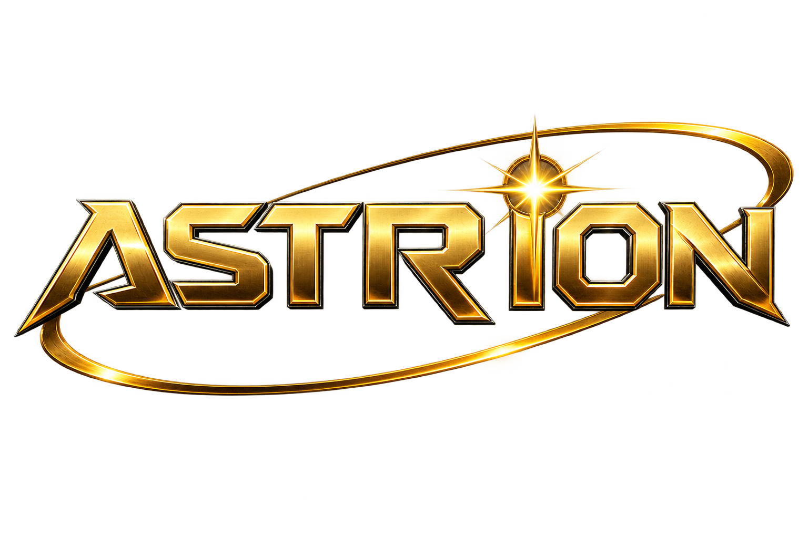
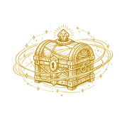
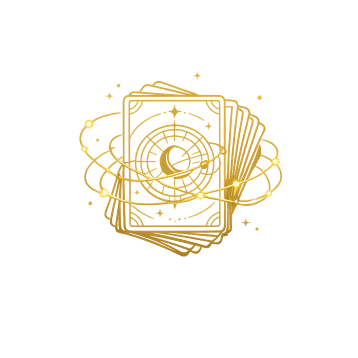
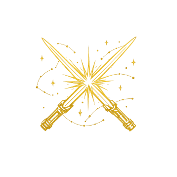
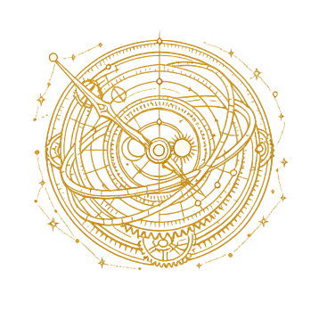

📅 Login-Bonus
Ein verpasster Tag setzt dich zurück auf Tag 1. Tag 7 bleibt bestehen, solange du täglich wiederkommst — erst ein verpasster Tag setzt auch dich von Tag 7 zurück.
Baue dein Kampfdeck: 20–60 Karten, bis zu 4 Kopien pro normaler Karte (abhängig davon wie viele du besitzt), aber nur 1 Kopie bei Urform/Sternenkern. Energie: mind. 8, max. 20 insgesamt im Deck. Tippe auf − / + unter einer Karte, um Kopien ein- oder auszubauen.
Sieg!
Runde geschafft!
Wie funktioniert das?
Karten über deiner 4. Kopie werden automatisch in Tauschmarken umgewandelt: Gewöhnlich = 1✦, Ungewöhnlich = 3✦, Selten = 8✦. Damit kannst du gezielt eine noch fehlende Karte einer Seltenheitsstufe eintauschen (welche genau, entscheidet der Zufall unter deinen fehlenden Karten dieser Stufe).
Verlauf
Version
v0.06.36
Sound
Soundeffekte im Gefecht und beim Navigieren (Treffer, Karten, Sieg/Niederlage). Separat von der Hintergrundmusik unten.
Musik
Titelsong im Menü, danach abwechslungsreiche Hintergrundmusik während des Spiels. Derselbe Regler wie im Titelbildschirm-Popover.
⚔️ Schwierigkeitsgrad
Wirkt sich auf normale Gefechte aus (nicht aufs Turnier — das hat mit den 6 Liga-Stufen bereits seine eigene Eskalation). Beeinflusst, wie stark das KI-Deck im Schnitt ist und wie oft die KI eigentlich vermeidbare Fehler macht.
Backup (Speicherstand sichern)
Es gibt kein Cloud-Save — dein Fortschritt liegt nur lokal in diesem Browser. Mit einem Backup kannst du ihn als Datei sichern und später (oder auf einem anderen Gerät/Browser) wieder einspielen.
🎁 Geschenkcode
Hast du einen Code bekommen? Hier eingeben und einlösen — jeder Code funktioniert pro Spielstand nur einmal.
Speicherstand zurücksetzen
Löscht deine gesamte Sammlung, AC und Tauschmarken unwiderruflich.